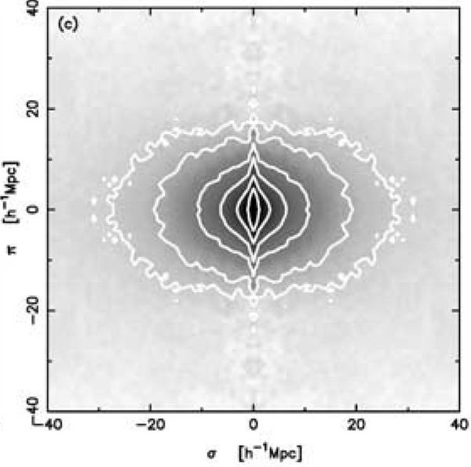
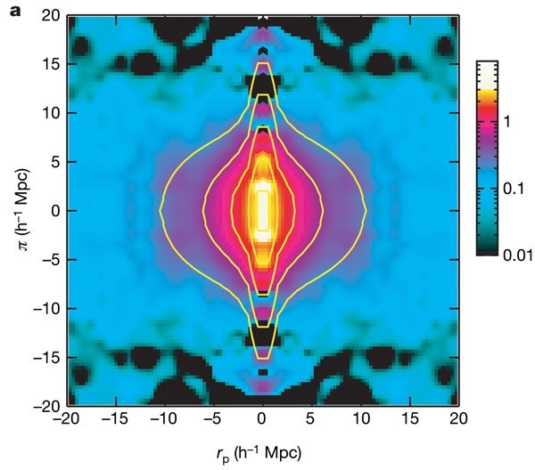
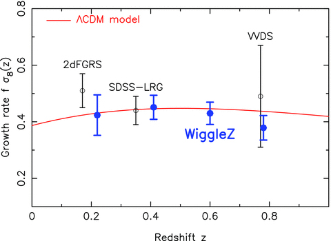
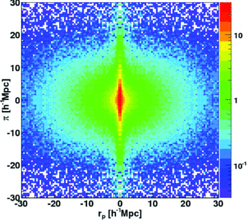
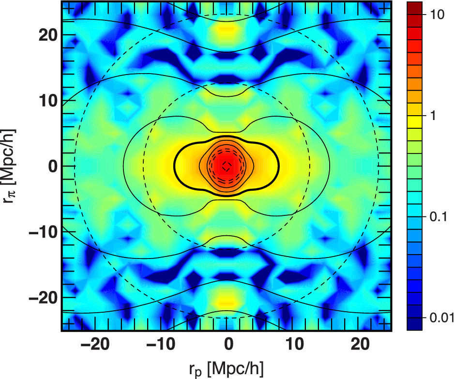
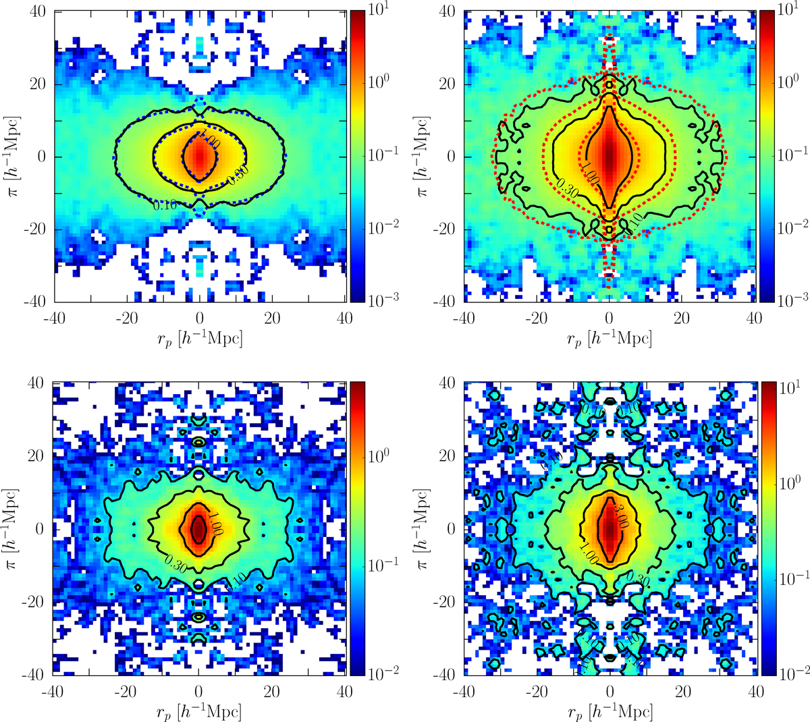
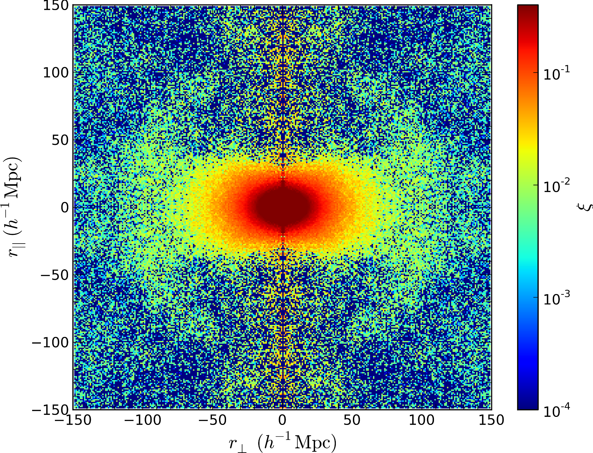

| Authors - Year | Title | Remarks | Suppliment |
|---|---|---|---|
| Kaiser 1987 | Clustering in real space and in redshift space | Kaiser | |
| Scoccimarro 2004 | Redshift-space distortions, pairwise velocities, and nonlinearities | Scoccimarro | |
| Matsubara 2008 | Resumming cosmological perturbations via the Lagrangian picture: One-loop results in real space and in redshift space | Matsubara | |
| Taruya et al. 2010 | Baryon acoustic oscillations in 2D: Modeling redshift-space power spectrum from perturbation theory | TNS Model | |
| Seljak&McDonald 2011 | Distribution function approach to redshift space distortions | Distribution Function Approach | |
| Zhang et al. 2013 | Peculiar velocity decomposition, redshift space distortion, and velocity reconstruction in redshift surveys: The methodology | Velocity Decomposition Approach | |
| Reid&White 2011 | Towards an accurate model of the redshift-space clustering of haloes in the quasi-linear regime | Streaming Model | |
| Wang et al. 2014 | An analytic model for redshift-space distortions | CLPT-GSM | |
| Vlaha&White 2019 | Exploring redshift-space distortions in large-scale structure | Fourier Streaming Model | Chen et al. 2019 |
| Zheng&Song 2016 | Study on the mapping of dark matter clustering from real space to redshift space | Advanced TNS | Zheng et al 2019 |
| Project | 2p CF | Growth Rate | Redshift Range | zeff | NSample | references |
|---|---|---|---|---|---|---|
|
2dFGRS
(:30-06-2003)
|

|
β = 0.49±0.09 | 0.01 < z < 0.20 | 0.15 | 165659 | Hawkins et al. 2003 |
| VVDS |

|
β = 0.70±0.26 | 0.60 < z < 1.20 | 0.77 | 5,895 ? | Guzzo et al. 2008 |
| WiggleZ |

|
fσ8 =
0.42±0.07, 0.45±0.04, 0.43±0.04, 0.38±0.04 |
0.22, 0.41, 0.60, 0.78 | Blake et al. 2011 | ||
| 6dFGRS |

|
β = 0.373 ± 0.054 | z < 0.07 | 0.067 | 8896G + 303SNe | Beutler et al. 2012 . Johnson et al. 2014 |
| FastSound |

|
fσ8 = 0.482±0.116 | 1.4 | Okumura et al. 2016 | ||
| GAMA | fσ8 = 0.29±0.10 | 0.18 | Simpson et al. 2016 | |||
| VIPERS |

|
fσ8 = 0.45 ± 0.11 | 0.85 | Torre et al. 2013 . Pezzotta et al. 2017 . Mohammad et al. 2018 | ||
| SDSS BOSS eBOSS |

|
fσ8 = 0.441±0.044 | 0.57 | Tegmark et al. 2006 . Reid et al. 2012 . Samushia et al. 2012 |